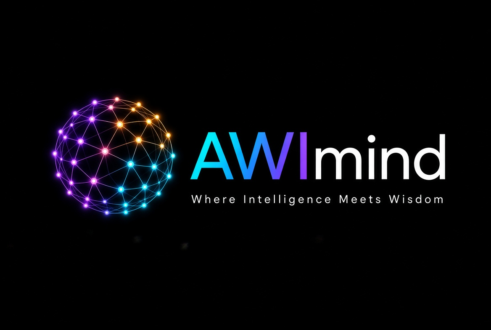
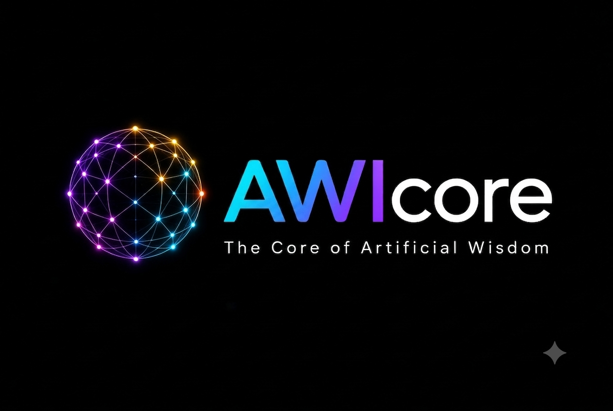
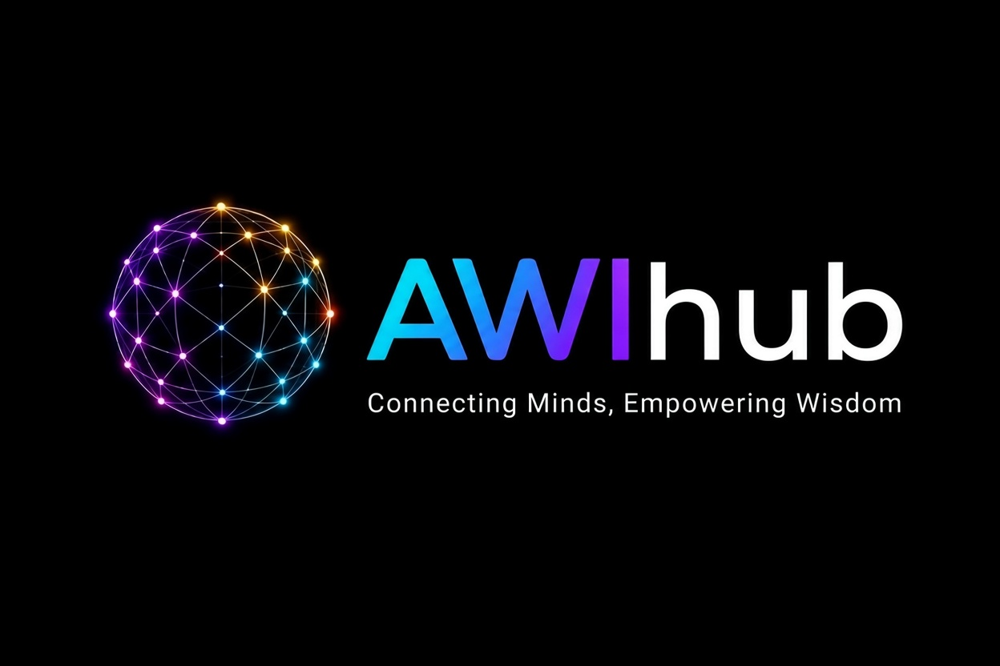
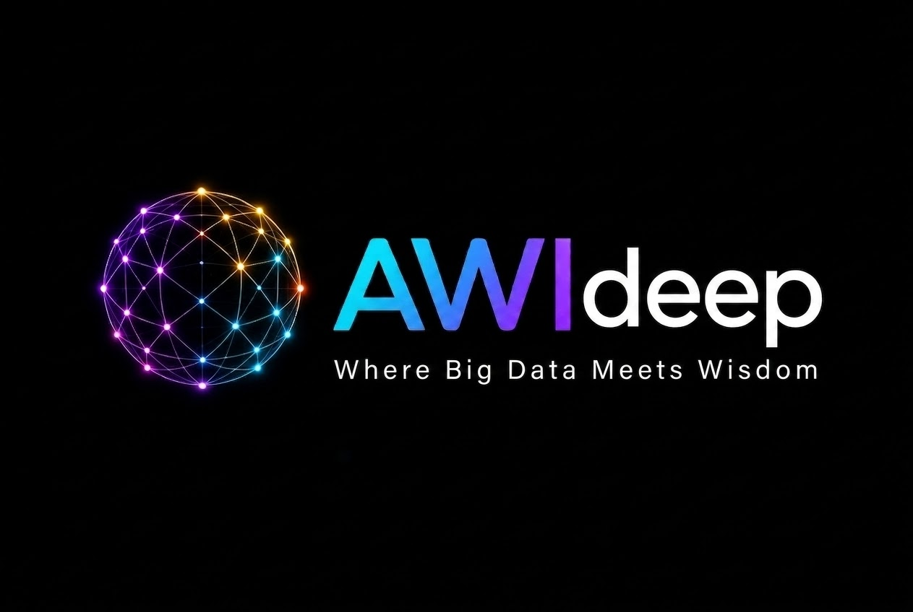
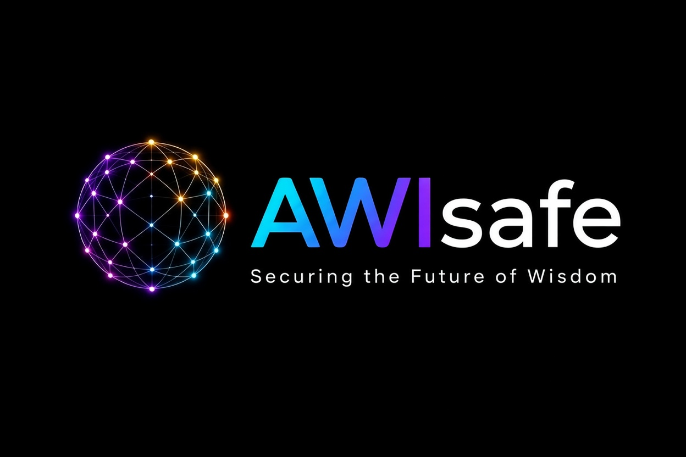
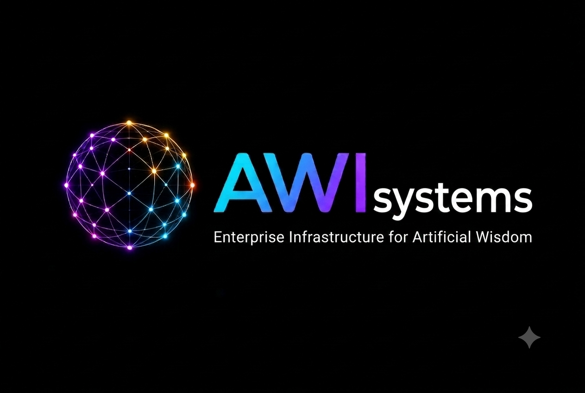

01 / COGNITION
AWI Mind
The cognitive dimension of artificial wisdom — exploring thought, consciousness, reasoning and meaning.
AWI explores the space beyond artificial intelligence — where intelligence is not only measured by what a system knows, but by how deeply it understands.
“Intelligence processes data. Wisdom creates meaning.”
The idea behind AWI
Artificial intelligence has transformed how machines process information, learn patterns and solve problems. AWI explores a deeper question: what happens when intelligence begins to pursue meaning, context, responsibility and wisdom?
AWI is conceived as a conceptual architecture for a future in which intelligence and wisdom are treated as complementary dimensions of advanced technology.
A modular ecosystem exploring different dimensions of artificial wisdom.

The cognitive dimension of artificial wisdom — exploring thought, consciousness, reasoning and meaning.

The foundational layer — where intelligence, reasoning and computational architecture converge.

A convergence point for ideas, people, systems and knowledge within the AWI ecosystem.

Exploring deeper intelligence, advanced learning, complex reasoning and the search for meaningful knowledge.

The responsibility layer — focused on safety, ethics, trust and the responsible development of intelligence.

The applied layer — translating the principles of artificial wisdom into scalable intelligent systems.
AWI is an exploration of that question. Not a replacement for artificial intelligence, but a vision for what intelligence might become when understanding, context and responsibility matter as much as computation.